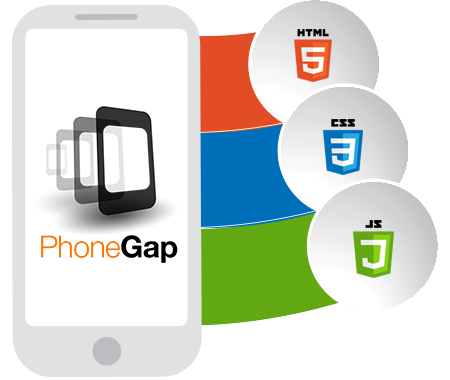

PhoneGap es una solución de Adobe que nos permite llevar el desarrollo para la web al mundo de los dispositivos. Se basa en una “envoltura” que nos permite ejecutar aplicaciones desarrolladas con HTML, CSS y Javascript como si fueran aplicaciones nativas para los teléfonos móviles o tablets.
Las aplicaciones que podemos desarrollar con PhoneGap se pueden publicar en las conocidas tiendas de aplicaciones (Google Play, Windows Store o App Store de Apple) y, al igual que las aplicaciones nativas, también son capaces de acceder a los periféricos de los dispositivos como la cámara, acelerómetro, etc.